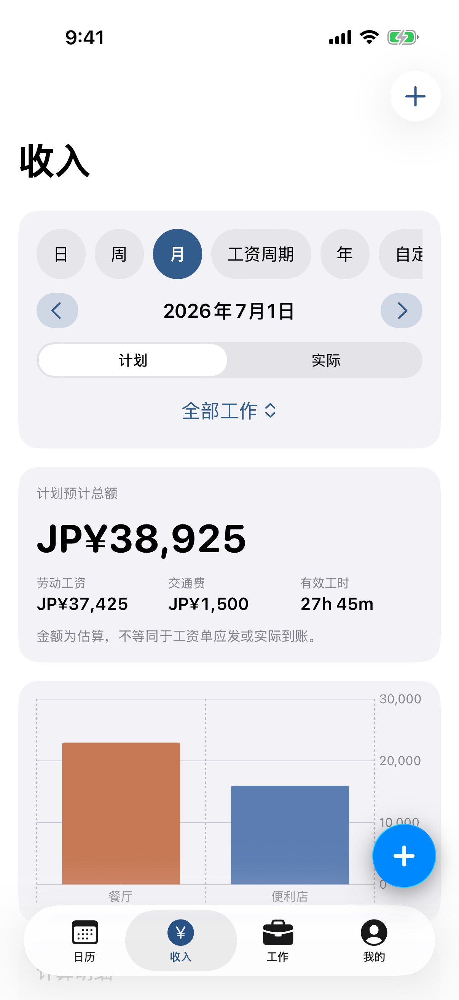
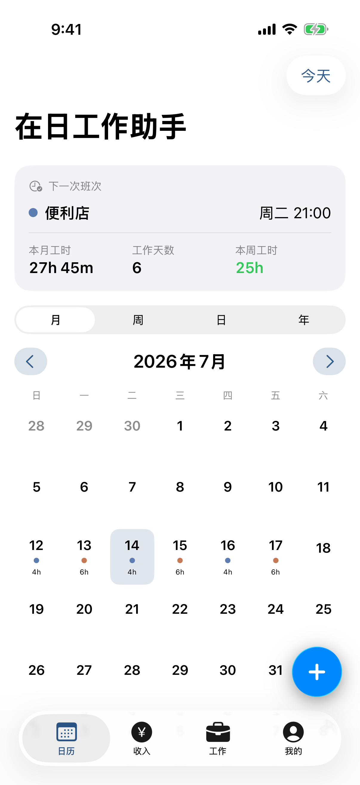

01
所有班次，一眼看清
月、周、日、年视图自由切换，多份工作用颜色区分。跨日班次、重复排班和多段休息都能准确记录。
把班次、工资和每周工时，安心放在一个地方。专为在日留学生与外国劳动者设计。


为什么做它
一份在餐厅，一份在便利店；计划班次、实际工时、深夜加薪、交通费和到账金额常常散落各处。在日工作助手把这些信息放回你自己手里，用熟悉的语言，清楚地呈现。
核心功能
不只是记录时间，也帮你看懂收入、核对工资，并在接近自设工时上限时提前提醒。
月、周、日、年视图自由切换，多份工作用颜色区分。跨日班次、重复排班和多段休息都能准确记录。
按日、周、月或工资周期估算，分开显示基本工资、深夜加成、交通费和扣减，再与工资单和实际到账核对。
把多份工作的工时合并计算，按你自己的许可条件设置每周上限、提醒阈值和连续 7 天辅助检查。
工资单、合同和排班表可保存在 App 私有空间。设备端文字识别只生成草稿，不把文件发往服务器。
本地优先离线也能完整使用
无需账号打开 App 就能开始
无行为追踪不建立广告画像
可选隐私锁Face ID 或设备密码保护
真实 App 界面
沿用 iPhone 熟悉的交互方式，让信息密度与使用负担保持平衡。
横向滑动查看更多 · 点击放大
熟悉的语言，更少的误解
从首次设置到工资单常见词汇，界面支持三种语言。你可以随时切换，不必重新开始。
开发进度
iPhone 版正在为首次发布做准备。Android 版已列入正式开发计划。